Since 2017 © MIT CSAIL (HCI Engineering group) [redesign by
moji
].
All Rights Reserved.


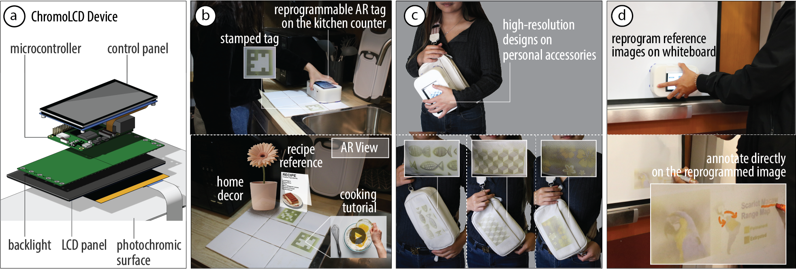
Figure 1: (a) ChromoLCD is a compact, high-resolution surface reprogrammer for surfaces treated with photochromic material. ChromoLCD consists of an LCD panel and a backlight with UV and RGB LEDs to achieve high-resolution light patterns at the required wavelengths. ChromoLCD can be used to (b) place reversible tracking markers in the physical environment, (c) stamp custom designs on the user's clothing within minutes, and (d) create high-resolution reference images on a whiteboard that can be augmented.
In this paper, we present ChromoLCD, a surface reprogrammer that uses a liquid crystal display (LCD) to achieve a compact handheld device without sacrificing image resolution. ChromoLCD consists of an LCD panel with a custom backlight containing R,G,B and UV LEDs, forming high-resolution light patterns with the required wavelengths. The compact form factor of ChromoLCD enables on-the-fly reprogramming of everyday surfaces. Our technical evaluation shows that ChromoLCD achieves a resolution of 25 ppi, which is 8 times better than the prior work. We demonstrate ChromoLCD with three applications, including the stamping of reprogrammable AR markers on a kitchen counter, on-the-fly designs on personal accessories, and reference pictures on a whiteboard.
Creating visually dynamic surfaces has been an area of interest in HCI, with applications ranging from product design to integrated displays. Researchers have worked on various methods to achieve visually dynamic surfaces, including optical structures and active materials. Most active materials, such as thermochromic and electroluminescent displays, limit the image transition to a predefined set of states. Photochromic material, whose color can be controlled with light, allows for multicolor high-resolution images that can be fully reprogrammed.
To create images on photochromic surfaces, researchers have developed optical systems that selectively expose areas of the dye. Single-color photochromic reprogrammers typically saturate photochromic pixels with UV light and rely on ambient visible light to erase the image. For instance, researchers have used UV lasers or grids of UV LEDs to create single-color images on photochromic surfaces.
Multicolor photochromic reprogrammers, on the other hand, require precise control over both the wavelengths and the intensity of the light to individually saturate each color channel. By combining UV and RGB projectors, researchers have achieved reprogrammable high-resolution textures on the surfaces of 3D objects. However, projector-based systems are typically large and require enclosures to block UV light, limiting the portability of the reprogrammer and the surfaces they can be used on.
To improve portability, researchers have turned back to LED-based reprogrammers. For instance, PortaChrome achieves this using a hexagonal array of UV and addressable RGB LEDs to supply the required wavelengths, and a custom optical diffuser to align the RGB and UV lights onto the required pixels. The compact form factor of PortaChrome enables mobile reprogramming on wearable surfaces. However, its resolution is limited to 3 pixels per inch (ppi) by the size of the smallest commercially available UV LEDs.
Improving the resolution of LED-based reprogrammers relies on the miniaturization of LEDs, especially at the UV wavelength, which requires decades of industrial research. Even with sufficiently small LEDs, aligning the light from the LEDs of different wavelengths to the same pixel remains challenging. Liquid crystal displays (LCDs) provide a way around this challenge. LCD panels are commonly used in everyday screens to map a uniform backlight into high-resolution light patterns through selectively blocking individual pixels. In a photochromic reprogrammer, the LCD panel can create aligned high-resolution light patterns at the four required wavelengths, solving both the resolution and the alignment challenges.
In this paper, we present ChromoLCD, the first LCD-based reprogrammer for photochromic surfaces, combining the portability of an LED-based reprogrammer and the high resolution of a projector-based one (Figure 1). ChromoLCD consists of a monochromatic 6-inch LCD panel with a custom backlight containing R,G,B and UV LEDs, which yields high-resolution patterns at the required wavelengths. Due to its compact form factor, ChromoLCD enables on-the-fly creation of high-resolution reprogrammable patterns on flat photochromic surfaces. ChromoLCD has a resolution of 25 ppi and reprograms multicolor images in 15 minutes. We demonstrate ChromoLCD with three applications: reprogrammable AR markers on a kitchen counter, on-the-fly design changes on personal accessories, and annotate-able reference pictures on a whiteboard.
In summary, we contribute:
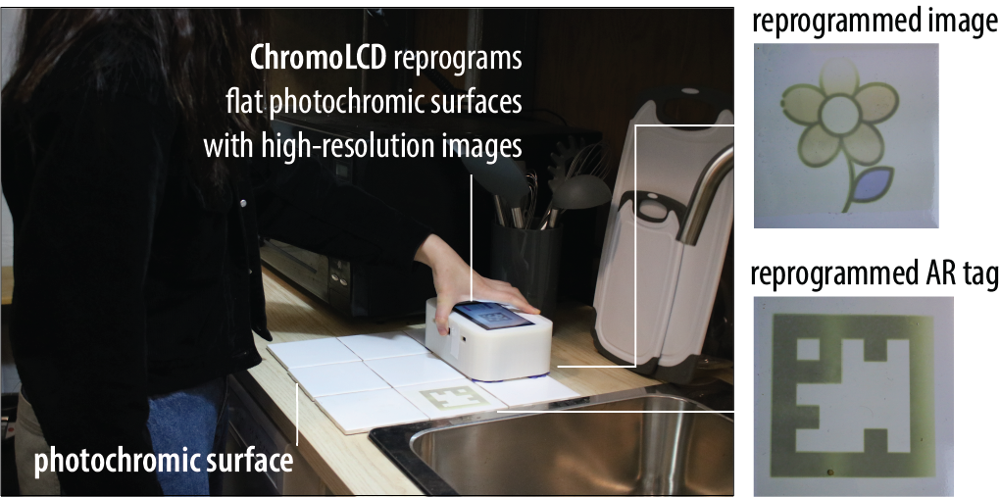
Figure 2: ChromoLCD is a high-resolution photochromic surface reprogrammer. To create a photochromic image, the user stamp the ChromoLCD device on surfaces previously coated with photochromic material.
ChromoLCD is a compact, high-resolution, and multicolor photochromic surface reprogrammer. To use it, the user holds ChromoLCD in direct contact with a surface that has been pre-coated with photochromic material. Figure 2 shows an example of on-the-fly reprogramming with ChromoLCD, where a user updates the patterns on kitchen tiles previously coated with photochromic dye. When in contact, ChromoLCD first illuminates the photochromic kitchen tiles with high-resolution light patterns at the wavelengths of UV (365nm) to saturate each pixel to its necessary saturation, activating cyan, magenta and yellow color channels at the same time. ChromoLCD then illuminates the photochromic surface with high-resolution light patterns at 444nm, 524nm and 656nm to individually desaturate each color channel to the required saturation level at each pixel. The resulting images are high resolution, and the compact form factor of ChromoLCD allows the user to reprogram any flat photochromic surface they can reach.
ChromoLCD consists of a monochromatic LCD panel paired with a custom backlight (Figure 3). This design allows high-resolution light patterns to be created in both UV and RGB wavelengths required to reprogram the multicolor photochromic material. Similar to the working principle of conventional LCD displays, the backlight creates uniform light while the monochromic LCD panel selectively controls whether the light from the backlight can pass through each pixel, allowing it to saturate or desaturate each pixel independently on the photochromic surface. Both the backlight and the LEDs are controlled by a microcontroller with a touch panel interface for user input and control.
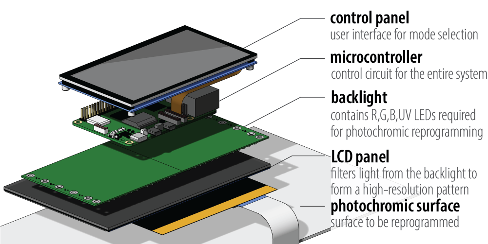
Figure 3: ChromoLCD consists of an LCD panel that blocks light on a per-pixel basis and a backlight supplying both UV and RGB light of required wavelengths, allowing it to create reprogrammable high-resolution light patterns at the required wavelengths.
LCD Panel: The LCD panel controls the shape of the light pattern that reaches the photochromic surface. In an LCD panel, each pixel can be electrically switched between a transmissive or opaque state. When a pixel is turned into its transmissive state, light from the backlight passes through the LCD to reach the photochromic surface while opaque pixels block the light.
Conventional RGB LCD displays create multicolor images by using a white backlight combined with red, green, and blue color filters for each pixel. This approach prevents UV light from passing through regardless of whether the pixel is turned on or off. In contrast, monochromatic LCDs do not have filters. When a pixel is in its transmissive state, light of any wavelength can pass through. This allows us to achieve the wavelengths required for photochromic material by designing a custom backlight containing the wavelengths needed for saturation and desaturation.
Since many commercially available monochromatic LCDs contain UV filters, we source ours from LCD 3D printers, which are the primary application for UV-transmissive LCD panels. We test and evaluate the LCDs used in different models. Table 1 lists five LCD panels we evaluated. The LCD panel in Elegoo Mars (part number: LS055R1SX04) turns out to be an RGB LCD, and thus allows no 365nm UV light to pass through, and is not suitable for ChromoLCD. In contrast, the monochromatic LCD used in the Elegoo Mars 3 (part number: YG2011A0) successfully transmits 365nm UV light. In this paper, we demonstrate our system using the LCD panel YG2011A0 used in Elegoo Mars 3 because of its commercial availability as a 3D printer replacement part.
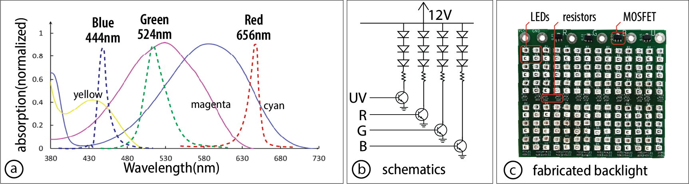
Figure 4: Comparison between LCD with different materials: (a) test whether an LCD panel is UV transmissive by displaying a stripe pattern with a UV backlight; (b) RGB LCD panels do not allow 365nm UV light to pass through; (c) monochromic LCD panels allow 365nm UV light to pass through.
Backlight: While the LCD panel controls the shape of the light pattern, the backlight provides the light itself, determining its wavelength and intensity. Since the photochromic material saturates under 365nm UV light and desaturates at individual color channels with different wavelengths of visible light, we select LEDs with wavelengths that optimize for individual control of the color channels. Specifically, we chose WL-SUTW as the UV LED with peak wavelength of 365nm, and L1SP-DRD0002800000, JE2835 GREEN and L1SP-RYL0002800000 for the RGB LEDs.
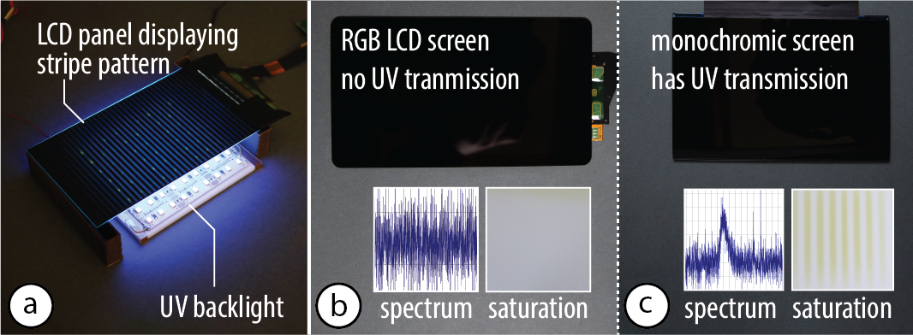
Figure 5: Backlight of ChromoLCD: (a) wavelengths of the LEDs on the backlight compared with the absorption spectrum of the photochromic color channels. (b) LEDs are connected in series of three and controlled by a MOSFET for each individual color; (c) manufactured PCB for the backlight.
The LEDs are powered by a 12V battery and in series of three, each color controlled through an N-channel MOSFET. To optimize light intensity to achieve faster reprogramming, we packed the LEDs as closely together as possible. In the resulting backlight, each color can be individually turned on or off with a 3.3V digital signal.
Control Circuit and Pattern Sequence: Both the LCD panel and the backlight are controlled with a Raspberry Pi 5 microcontroller powered by a power bank that has a 5V and a 12V output. The LCD panel is run by an HDMI driver board through the HDMI portal and powered by the 5V output. The backlight module is controlled via the GPIO pins on the microcontroller and powered by the 12V output.
The microcontroller computes the pattern sequence to be displayed on the LCD panel. To compute the desaturation time, we use the same algorithm as in ChromaUpdate. Because of the limited processing speed of a microcontroller compared with the desktop computer used in prior work, we precomputed and stored all combinations of the required desaturation time to achieve a color to speed up the computation time.
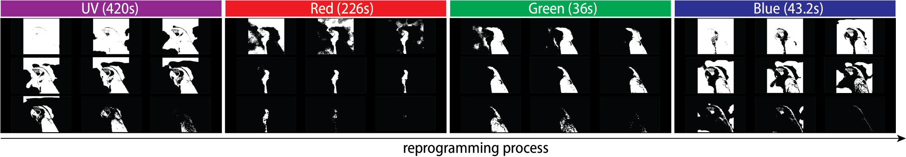
Figure 6: Image sequence on the LCD panel under each backlight color to form a multicolor pattern.
The ChromoLCD device is a standalone device and does not require connecting to an external computer to function. It has an integrated touchscreen interface on the device body. The user can select the image and the reprogramming mode to allow the device to show the light pattern that generates the specified image on the photochromic surface.
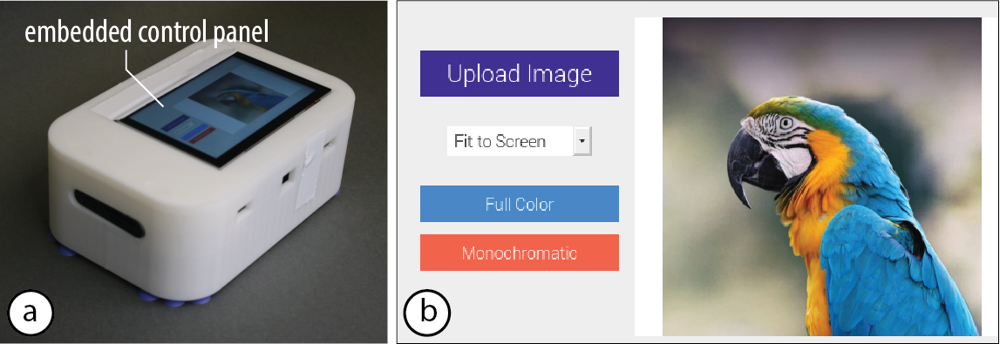
Figure 7: (a) The user interacts with ChromoLCD through a touchscreen interface. (b) The user selects the image to reprogram into.
Select Image: To select the target image to reprogram into, the user loads the image by selecting the "Select Image" button. After the user specifies the image, the image will be displayed in the interface for the user to confirm.
Color Reprogramming: The user selects the "Reprogram" button to start the reprogramming process. Because the color space of multicolor photochromics is smaller than that of the RGB color space due to the limitation of available photochromic dyes, the desaturated pattern will differ from the desired image. Therefore, when the user starts the process, a preview of the expected reprogrammed result and the time needed for the reprogramming will be displayed. After previewing the image, the user can select the "Start" button to start the image transfer process.
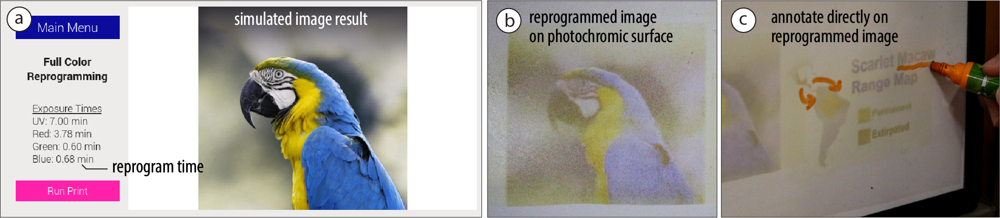
Figure 8: (a) Preview of the the reprogramming results; (b) reprogrammed physical result; (c) the user can interact with the physical result.
In this section, we evaluate the performance of ChromoLCD by measuring its achievable resolution and the saturation and desaturation curves of the color channels. We also characterize the monochromatic LCD panel by measuring its transmittance and contrast ratio on the color channels.
Apparatus and Procedure: While the ChromoLCD has a 4k resolution LCD panel, other factors, such as the diffusion when light travels through the front glass panel covering the liquid crystal and the surface diffusion on the photochromic surface, can yield a different resolution of the resulting photochromic pattern. We measure the resolution of ChromoLCD by creating a pattern with square pixels of side lengths ranging from 1mm to 20mm, reprogramming photochromic surfaces of different textures with this pattern, and observing the result.
Results: Figure 9 shows the resulting resolution of the pixels with different side lengths. The vinyl device casing, which has a textured surface, has identifiable pixels of 2mm width. In comparison, the clay panel, which has a smooth surface, has identifiable pixels of 1mm width. This is likely because smooth surfaces are in better contact with the LCD panel and thus have less surface diffusion.
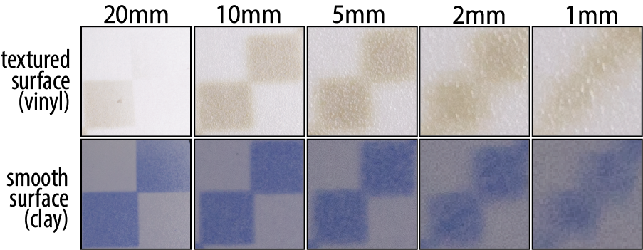
Figure 9: The pixel resolution on photochromic surfaces of surface textures.
Apparatus and Procedure: The transmittance of an LCD measures the percentage of light that can pass through the display. When LCD panels are turned on, pixels on the LCD can be turned into a state that shows high transmittance, allowing the backlight to pass through. To measure the transmittance of the ChromoLCD display, we used a spectrometer (model: Thorlab CSS200) to measure the spectrum and equivalent light intensity at the same location with no LCD panel, an LCD panel at its transmissive state (turned on) and one at its opaque state (turned off).
Result: Figure 10 shows the transmittance of the LCD panel in ChromoLCD under the four wavelengths supported by the backlight. The measured transmittance of the LCD panel is 2.1% for UV light at 365nm, 5.1% for blue light at 444nm, 4.1% for green light at 524nm and 4.9% for red light at 656nm. This is consistent with the transmittance of the conventional LCD, which is 4% to 7%. Because of the scarcity of UV applications, commercially available LCD panels are not optimized for UV backlight, resulting in lower transmittance than other bands.
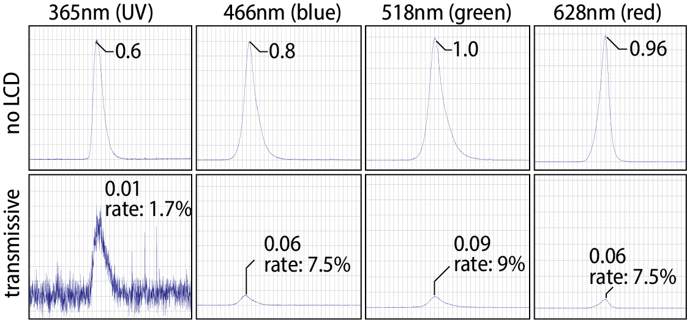
Figure 10: Transmittance of LCD panel in ChromoLCD: 2.1% under wavelength of 365nm, 5.1% under 444nm, 4.1% under 524nm and 4.9% under 656nm. Plots are scaled for better readability.
Apparatus and Procedure: The contrast ratio determines the contrast in light intensity between a transmissive pixel and an opaque pixel. It is calculated by dividing the light intensity at the transmissive state with the light intensity at the opaque state of the screen. We measure the spectrum and the equivalent light intensity at a higher integration rate to get a more accurate reading when the screen is at its opaque state, and then compute the contrast ratio with equivalent light intensities.
Result: Figure 11 shows that the LCD panel of ChromoLCD has a contrast ratio of 67:1 under 365nm, 28:1 under 466nm, 54:1 under 518nm and 39:1 under 628nm. Assuming linear saturation and desaturation, this introduces slight noise to the pattern created.
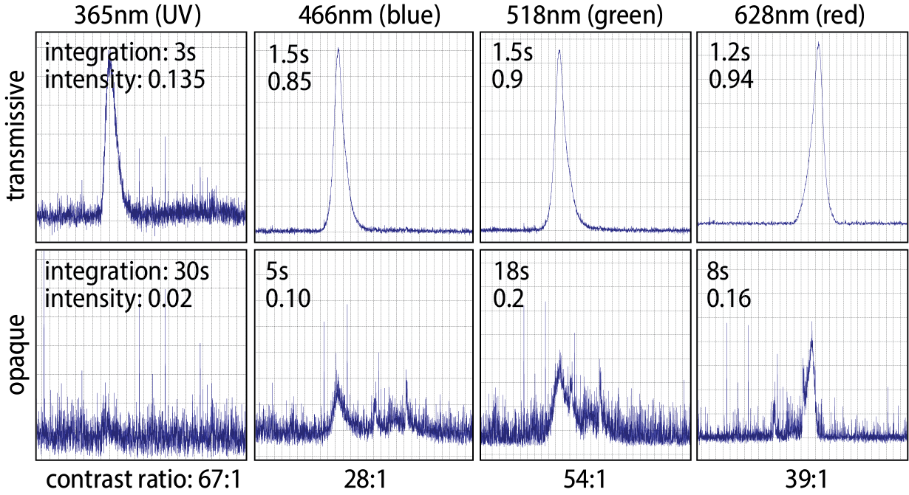
Figure 11: Contrast ratio of the LCD panel of ChromoLCD: 67:1 under 365nm, 28:1 under 466nm, 54:1 under 518nm and 39:1 under 628nm.
Apparatus: To evaluate the color reprogramming time, we measured the time for saturation and desaturation on white ceramic blocks sprayed with photochromic dye of a single color channel. We used the same method as in ChromoUpdate, where we made sprayable photochromic material by mixing photochromic material with Dupli-Color EBSP30000 Glossy Clear Coat spray paint at a concentration of 0.033w% cyan, 0.033w% magenta, and 0.1w% yellow, respectively.
Procedure: For saturation, we illuminate a gradient of UV light for 10 minutes for cyan, 10 minutes for magenta and 1 minute for yellow, allowing them to achieve full saturation. For desaturation, we first fully saturate each panel under UV light and illuminate a gradient on all samples for 10 minutes for red light, and 1 minute for green and blue light.
Result: Figure 12 and Figure 13 show the resulting color gradient achieved by illuminating the described color pattern. The resulting saturation time for the color channels under UV light is 10, 10 and 1 minute, while the desaturation time is 45 seconds, 55 seconds and 8.75 minutes using their primary desaturation wavelength.
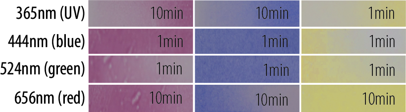
Figure 12: Saturation and desaturation across each color channel at each wavelength.
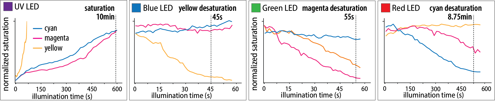
Figure 13: Normalized saturation and desaturation process across each color channel at each wavelength.
Due to its handheld form factor, ChromoLCD allows for making high-resolution photochromic images in the user's physical surroundings. In this section, we demonstrate how users can benefit from this reprogramming interaction with three applications: on-the-fly design changes on the user's accessories, reprogrammable AR markers in the user's physical surroundings, and reference images on an interactive whiteboard.
The portability of ChromoLCD allows it to be taken on the go and reprogram surfaces independent of the user's physical location. Figure 14 demonstrates this potential with the example of reprogramming the designs of a bag for different occasions while the user is outside. The user reprograms it with a professional stripe design at work and when they step out from work, they can change it to a playful design. In this application, the designs took 8, 9, 8 minutes to reprogram, respectively.
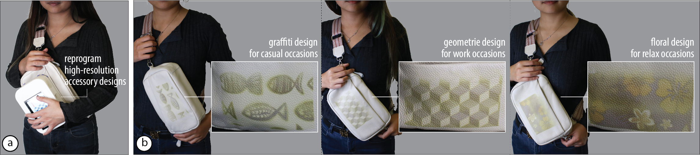
Figure 14: (a) ChromoLCD can be used to reprogram the user's accessory with various high-resolution designs on-the-fly. (b) A graffiti design for casual occasions, a geometric design for professional occasions, and a floral design for travel and relaxation.
Compared with previous desktop-scale systems, ChromoLCD is more compact, allowing users to use it like a stamp and create high-resolution images in their physical surroundings. Figure 15 demonstrates this potential with the example of stamping AR markers on the kitchen counter. Figure 15b shows the two AR tags that display recipe reference and cooking tutorial, and a flower image that displays home decor in the AR space. In this application, both AR tags took 7 minutes to reprogram, and the flower took 15 minutes.
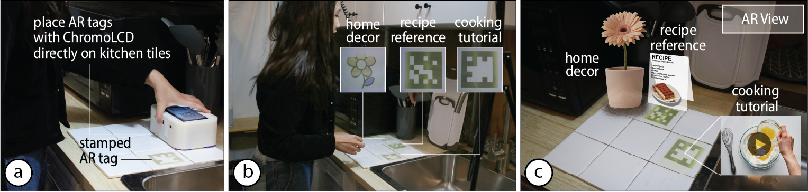
Figure 15: The portability of ChromoLCD allows it to be used to create AR markers on the user's physical surroundings, such as on the kitchen counter to show a recipe reference and cooking tutorial.
One of the advantages of the photochromic material is its ability to augment physical surroundings with digital capabilities while preserving their original form and functionality. Figure 16 illustrates how ChromoLCD can maximize this potential with an example of interactive teaching on a photochromic-coated whiteboard. The user can stamp on multicolor reference diagrams and images with ChromoLCD, such as the picture of a Macaw parrot and the map of their habitat. The user can then annotate it on the physical whiteboard with the reference image just like a normal whiteboard. In this application, the parrot took 11 minutes to reprogram and the diagram took 20 minutes.
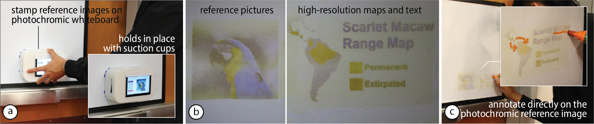
Figure 16: (a) ChromoLCD can be used to stamp reference images and diagrams on a photochromic whiteboard. (b) Physical result after reprogramming. (c) The user can then annotate on the physical whiteboard with a conventional whiteboard marker.
Adapting Existing LCD Technologies: While ChromoLCD currently uses a 6.6-inch LCD panel sourced from 3D printers to create a handheld photochromic reprogrammer, many existing LCD production lines could be adapted for photochromic requirements at the manufacturing level. The primary barrier are the RGB color filters and UV protection filters, which block the UV wavelengths needed for photochromic saturation. By omitting these filters during manufacturing or including empty pixels, many LCD form factors become viable for photochromic reprogramming. For example, large LCD panels such as those in televisions could be controlled by robotic systems and tiled to create wall arts. Similarly, small LCDs from smartwatches could be worn as personal accessories to stamp signatures or custom patterns.
Interactive Reprogramming: ChromoLCD allows objects to have on-the-fly dynamic appearance while preserving their physical texture and feel, it currently only supports stamping interactions. In future work, we plan to combine an optical mouse sensor with an AprilTag-based camera tracking system to allow users to swipe scalable images onto large surfaces.
Curved Surfaces: While ChromoLCD achieves both high-resolution light patterns and compact form factor, it only reprograms surfaces that are flat or can be made flat. This is because commercially available LCDs commonly involve flat glass substrates to keep the precise distance of the liquid crystal matrices. However, because of the abundance of flat and conformable surfaces in the physical surrounding such as walls and clothing, ChromoLCD still covers a significant application space even with the current limitation. In the future, researchers can explore the use of other types of LC displays, such as flexible PDLC displays that are proved to make flexible transmissive displays.
LCD Transmittance of UV Light: Because of the lack of commercial application of 365nm UV light, the transmittance of the screens that we have on UV is 2.1%. While this allows for the UV to pass through and generate patterns, it is lower than that of visible light and results in a longer saturation time and lower energy efficiency. Resolving this requires the development of liquid crystal with a bandwidth that optimizes for the transmittance of 365nm UV light, such as with the use of wire grid polarizers.
In this paper, we introduced ChromoLCD, the first LCD-based reprogrammer for multicolor photochromic surfaces. ChromoLCD combines the portability of an LED-based reprogrammer and the high resolution of a projector-based one. Combining an LCD panel with a backlight with LEDs of the required wavelengths, ChromoLCD achieves high-resolution light patterns at the required wavelengths. ChromoLCD opens up new applications of photochromic materials, such as creating reprogrammable AR markers in physical spaces, altering the designs of personal accessories, and including reference images on a physical whiteboard. While the current implementation of ChromoLCD has limited flexibility, this compact reprogrammer for photochromic material based on digitally-controlled occlusion has the potential to broaden the interaction of photochromic reprogramming significantly and achieve a set of rich interactions, such as rolling and swiping.
We thank Anthony Pennes for troubleshooting our circuits and Junyi Zhu for providing ideas on applications. We also thank Ticha Sethapakdi, Spencer Toll, and Maxine Perroni-Scharf for their feedback on paper drafts.